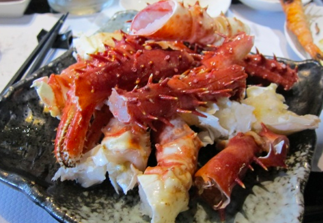

天氣冷颼颼～溫度越來越低腦袋裡面都是熱騰騰的食物畫面，
天冷就是要吃鍋(其實什麼時候都想吃啦)在台灣吃火鍋食材真的
越來越誇張，以前吃個平價小火鍋，有個菜盤有盤肉再搭配個主食
就覺得相當豐富，現在動不動就是什麼痛風鍋～帝王蟹～波士頓龍蝦，
總之食材無極限.
這間位在捷運永春站附近的『八田帝王蟹鍋物』自從上
次初訪的痛風蝦蝦桶後，又推出了超划算的全新雙人及四人套餐，豐盛又澎湃的
海陸大餐搭配香氣十足的鴛鴦鍋底，天氣再冷也不怕
北上遊子必去火鍋店之一，天寒心更寒時一定要跟朋友約一下
